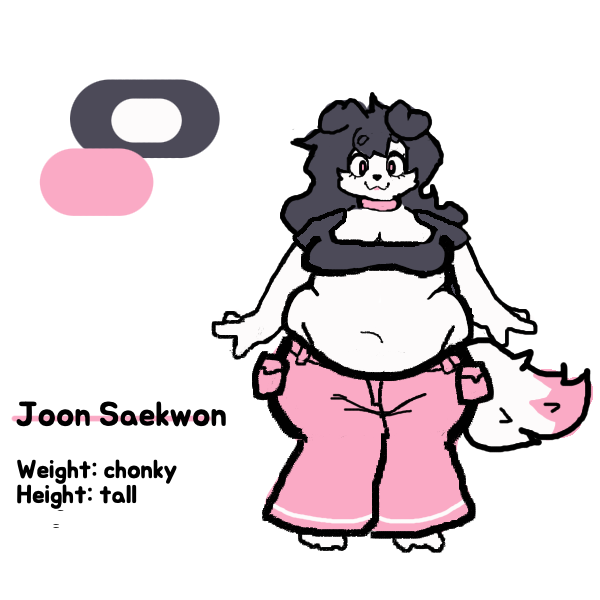
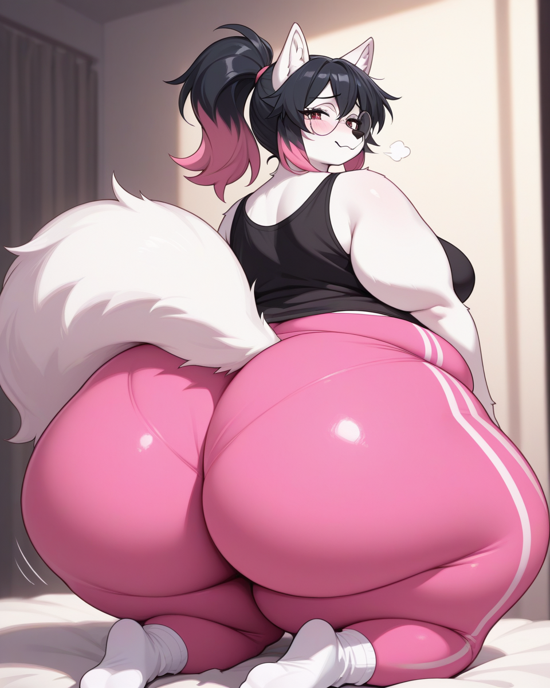

hi / Last edited: Fri, May 2
this place is for my random thoughts. things are rather fleeting here
this place is for my random thoughts. things are rather fleeting here
her name is Joon Saekwon (it's not Korean it just has a similar phonaesthetic)
gotta show my big pubbygirl to my therapist
the ref photos stay bc im indecisive
 

Russian has a LOT of allophony.
Palatalization and iotation
Russian distinguishes between palatalization (soft consonants, e.g. [kʲ]) and iotation (consonant followed by [j]).
Palatalization is most transparently written with ь but with other ways of arising.
Iotation is written with j-vowel characters.
Hard sign
An inserted ъ prevents the [j] of a j-vowel character from becoming palatalization on the preceding consonant.

tank game with a cute little bug tank with customizable texture


in order to coom, I must first draw for at least 10 minutes (with a timer!). it doesn't matter if I don't like what I end up drawing, because the goon afterwards is simply there to reward the effort, thereby conditioning me to enjoy the process of drawing more (I have no satisfying hobbies)


when I like something a lot I feel guilty that I don't do more with it, and overwhelmed when I do
I want my goals to be singular but they are not. I draw ass and belly and tit and that's good! but the idea of being the ass guy lingers
magical girl series where every enemy has some sort of embarrassing magic that, even after being defeated, doesn't go away for like a week, so the MC has to go back to normal life pretending that she doesn't have gigantic breasts for some reason
In the modern day, true dragons are extinct (on Earth at least) because they knew that humans would drive them out, but because they have such a strong, almost royal innate need for bloodline preservation they bred with humans to keep their lineage alive.
Subspecies most directly related to true dragons are upwards of 20", but most of the population is roughly human sized.
cowgirls that are genetically destined to become huge. they're roughly human sized up until around 20, after which for about two years they have incredible hunger, gain 400lbs, and then their diet goes back to normal. it's like a physiological metamorphosis -- their body needs to grow to that size